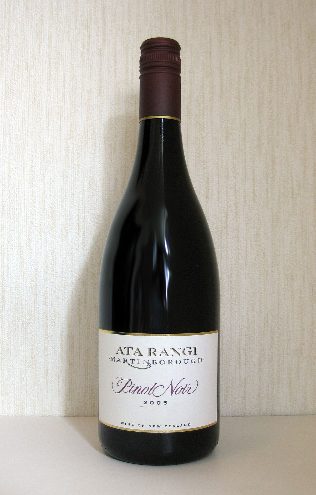

RED
Family winery in Martinborough founded in 1980 by Clive Paton, one of the pioneers of New Zealand Pinot Noir.

In 1980 Clive Paton, who until then had been a farmer, bought a stony block of land on the outskirts of Martinborough and planted his first vines, shortly after studies of the area had pointed to its potential for winegrowing. Later his partner, Phyll Pattie, and his sister Alison joined the project, and the winery became a family business in which long-serving winemakers have also played a part. The name Ata Rangi comes from the Māori language and is usually translated as “new beginning” or “dawn sky”.
Ata Rangi was one of the first wineries to show that New Zealand could produce Pinot Noir of high quality. Some of its vines come from a Pinot Noir selection known locally as the Abel clone or “gumboot clone”, whose origin, according to an often-repeated story, is attributed to a cutting from Burgundy intercepted by customs at Auckland airport and later propagated by the officer Malcolm Abel. These old vines remain an essential part of its main Pinot Noir.
As well as Ata Rangi Pinot Noir, the winery makes Crimson, a Pinot Noir sourced mainly from younger vines, the Craighall Chardonnay, Sauvignon Blanc, Pinot Gris and a rosé. Its wines are noted for their concentration, structure and ageing potential.
